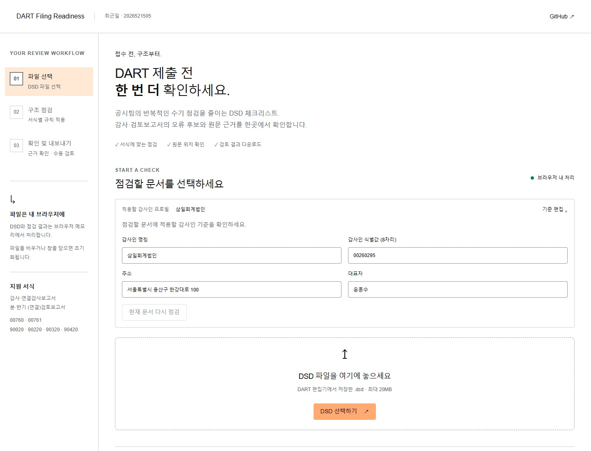
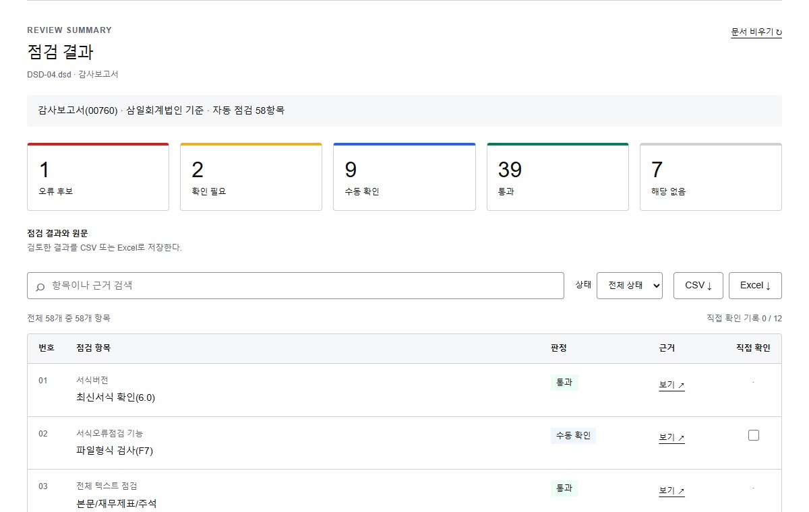
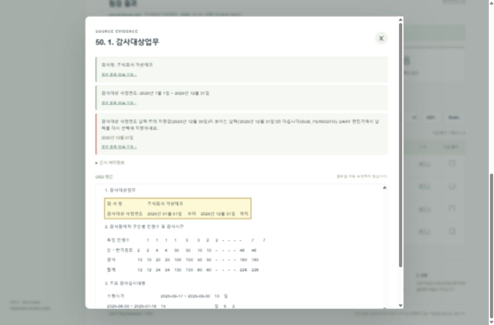
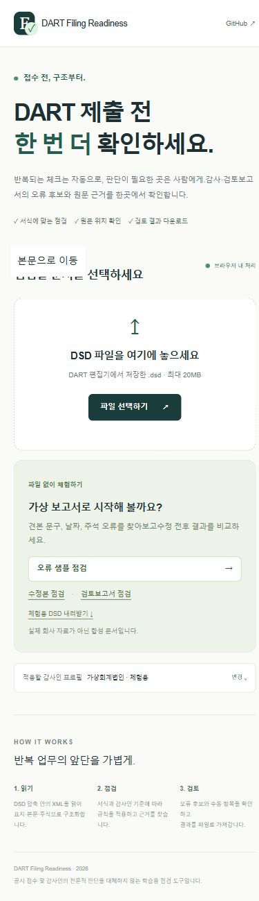

삼일회계법인 재직 회계사 · Assurance 업무 작성일: 2026년 10월 28일 제출: LearnUs · 2026년 10월 28일(수) 자정
과제 요약
공시 전 DSD 문서의 일부 형식·구조를 점검하는 개인 과제용 웹 앱이다. 실제 DSD 28건의 읽기·점검 실행과 반복 결과 일치를 확인했다. 92는 문서·항목 조합의 오류 후보 수이며, 정확도는 승인하지 않았다. 브라우저 조작과 캡처는 Codex가 수행했다. 작성자의 독립적인 수동 확인은 하지 않았다. 감사·검토 및 회사의 공시 제출 책임과 승인 절차를 대체하지 않는다.
본 앱은 과제 수행을 위한 개인 프로토타입이며, 삼일회계법인 또는 PwC의 공식 서비스·업무도구가 아니고 회사의 검토·승인을 받은 제품이 아닙니다.
상장회사와 일정 요건을 충족하는 비상장회사 등은 적용되는 제도에 따라 재무제표와 관련 보고서를 공시합니다. 투자자와 이해관계자는 공개된 자료를 통해 기업의 재무상태와 경영성과를 확인합니다.
기업은 재무제표를 작성하고, 회계사는 이를 감사해 감사보고서를 작성합니다. 분·반기에는 해당 보고서와 업무 범위에 맞는 검토 절차가 수행되기도 합니다. 본 과제는 이러한 감사·검토의 전문적 판단 전체를 자동화하려는 것이 아니라, 최종 공시문서의 반복적인 형식·구조 점검을 돕는 데 초점을 맞췄습니다.
처음 접하는 분을 위한 용어
재무제표
기업의 재무상태와 일정 기간의 경영성과 등을 보여 주는 보고서입니다.
Assurance
감사·검토 등 정보의 신뢰성을 높이는 회계사의 업무 영역입니다. 저는 이 분야에서 일하고 있습니다.
DART
금융감독원이 운영하는 전자공시시스템입니다. 기업이 제출한 재무제표와 감사보고서 등을 누구나 조회할 수 있습니다.
DSD
DART 편집기에서 작성·저장하는 전자문서 파일입니다. 표지, 문단, 표, 날짜, 문서 정보 등이 들어 있으며 이 앱이 점검하는 입력 파일입니다.
R&Q 공시팀
이 보고서에서는 제가 경험한 공시 관련 점검 업무를 가리킵니다. 공식 조직의 역할·절차를 정의하는 설명은 아닙니다.
공시까지의 흐름
회사가 재무제표와 공시서류를 작성하고, 감사인은 적용되는 업무 범위에 따라 감사 또는 검토를 수행해 관련 보고서를 발행합니다. 회사는 공시서류를 DART 제출 절차에 따라 제출합니다. 앱은 제출 전 일부 형식·구조 점검을 보조하며, 감사·검토나 회사의 공시 책임을 대체하지 않습니다.
사람을 늘려도 남는 반복 작업
제가 경험한 제출 집중기에는 짧은 기간에 여러 문서를 반복해서 확인해야 했습니다. 이 과정에서 누락이나 표기 불일치를 먼저 찾고 원문 위치를 함께 제시하면 검토에 도움이 되겠다고 생각했습니다. 인력 규모나 운영 방식은 이 보고서에서 설명하지 않습니다.
따라서 파일을 읽어 오류 후보를 먼저 찾고, 관련 원문으로 바로 이동하며, 수동 확인이 필요한 항목을 구분하는 도구를 기획했습니다. 처리시간이나 오류 감소율은 측정하지 않았으므로 효과를 수치로 단정하지 않습니다.
핵심 사용자는 접수 전 보고서의 구조를 확인하는 담당자다. 공개 방문자도 실제 업무 파일을 준비하지 않고 가상 회사의 DSD로 동일한 점검 흐름을 체험할 수 있게 했다.
주요 기능
사용자가 확인할 수 있는 동작
DSD 선택·체험
자신의 파일을 선택하거나 가상 체험 자료를 실행해 문서 정보를 확인한다.
감사인 기준 지정
이름·식별값·주소·대표자를 설정한다. 기본 프로필은 가상 값이다.
서식별 점검
연차 감사보고서와 분·반기 검토보고서의 규칙을 구분해 적용한다.
상태 구분·검색
오류 후보·확인 필요·수동 확인·통과·해당 없음을 구분하고 필요한 항목을 찾는다.
원문 근거 확인
발견 사항의 헤더 정보와 문단·표 등 원문 위치를 확인한다.
확인 기록·내보내기
사람이 검토한 표시를 자동 판정과 구분하고 결과를 내려받는다.
감사인 식별값은 DSD 헤더의 AUDIT_CIK 필드와 비교하는 값이다. 이 보고서는 해당 값이 미국 SEC CIK나 OpenDART의 공시대상회사 corp_code와 같다고 검증하지 않았다. 화면과 본문에서는 일반적인 “식별값”으로 표기한다.
사용 순서
01 · 시작가상 체험을 실행하거나 DSD 파일을 선택한다.
02 · 기준 확인해당 감사인의 프로필과 문서 종류를 확인한다.
03 · 결과 검토상태별로 걸러 근거와 원문을 확인한다.
04 · 수동 확인사람의 판단이 필요한 항목을 검토한다.
05 · 비교 체험오류·수정 샘플을 실행해 결과 차이를 본다.
06 · 결과 보관필요한 결과를 사용자 기기에 내려받는다.
지원 범위
연차 감사보고서 코드는 00760·00761, 분·반기 검토보고서 코드는 90020·90220·90320·90420이다. 범위 밖이나 코드 미확인 입력에는 연차 규칙을 임의로 적용하지 않는다.
연차 점검은 기본 체크리스트 55개와 보조 점검으로 구성된다. 항목의 적용 여부와 자동·수동 확인 범위가 다르므로 전체 항목 수를 자동 검증된 항목 수로 해석하지 않는다.
완료 기준 공개 URL에서 체험 실행 → 결과 표시 → 원문 근거 확인 → 결과 다운로드를 수행할 수 있고, 수동 확인이 남은 상태를 자동 통과로 표시하지 않아야 한다.
최근일 · 2026505521 · 개발 보고서3 / 14
STRUCTURE & DATA HANDLING
3. 앱 구조와 작동 원리
6주차 강의의 HTML·CSS·JavaScript 역할 구분으로 구조를 설명했다. 9주차의 저장 방식 비교를 바탕으로, 문서 보존이 필요 없는 이 앱에서는 브라우저 메모리 처리를 선택한 이유를 점검했다.
HTML·CSS·JavaScript를 제공하는 정적 웹 앱으로 구성했다. 별도 데이터베이스나 로그인, 외부 AI API 없이 파일 읽기부터 결과 생성까지 브라우저에서 수행한다.
구성
역할
화면 · HTML/CSS
파일 선택, 체험, 프로필 입력, 상태별 결과와 원문 근거를 배치한다.
동작 · JavaScript
사용자 동작을 받아 읽기·점검을 실행하고 필터·확인 표시·다운로드를 처리한다.
DSD 읽기 모듈
DSD는 ZIP 형식이다. 내부의 contents.xml·meta.xml에서 헤더·문단·표와 위치를 읽는다.
점검 엔진
보고서 코드에 맞는 규칙을 실행하고 상태·발견 사항·원문 위치를 반환한다.
합성 체험 자료
가상 회사의 XML을 브라우저에서 ZIP으로 만들어 실제 파일과 같은 경로로 처리한다.
정적 호스팅
앱 소스 파일만 제공한다. 사용자가 고른 DSD를 업로드받는 API는 두지 않는다.
기존 도구의 문서 읽기·점검 모듈 7개를 재사용하고 독립 화면을 구성했다. 별도·연결 문서는 각각 점검할 수 있지만 두 파일의 비교와 전체 공시사례 검색은 이번 앱에 포함하지 않았다. 원본 기준과 변경 내역은 docs/provenance.md에 남겼다.
데이터 처리
점검 과정에서 앱 코드가 DSD를 별도 업로드하거나 localStorage에 저장하지 않도록 구현했다. 원본과 결과는 실행 중 브라우저 메모리에서 처리하며 connect-src 'none'을 적용한다. 이는 공개된 앱 코드의 파일 처리 경로에 대한 설명이고 독립 보안감사나 호스팅 접속 로그 처리까지 확인했다는 뜻은 아니다.
사용자가 내려받은 파일은 사용자 기기에 남는다. 호스팅 접속 로그와 다운로드 파일의 처리는 앱이 통제하지 않는다. 실제 고객 문서 입력은 승인된 환경과 정책을 확인한 뒤에만 고려해야 한다.
재사용과 이번 과제의 변경
기존에 개발하던 DSD 읽기·점검 기능 일부를 활용했다. 이번 과제에서는 이를 독립 웹 앱으로 구성하고, 감사인 기준 입력·가상 체험·결과 확인·내보내기와 공개 배포를 완성했다.
디자인 가이드에서 참고한 여백·가독성·일관된 글자 위계는 유지하고, 공식 서비스로 오인하지 않도록 로고와 전용 색상 표현을 제거했다. 흰 배경·검정 본문·회색 강조로 개인 과제임을 드러냈다.
설명할 수 있는 작동 원리 “서버는 화면 파일만 보냅니다. 브라우저가 DSD의 ZIP/XML을 읽어 문서 종류에 맞는 규칙을 실행하고, 결과와 근거 위치를 표시합니다. 의미 판단이 필요한 부분은 사람이 확인합니다.”
최근일 · 2026505521 · 개발 보고서4 / 14
COURSE TO IMPLEMENTATION
4. 강의에서 배운 내용을 어떻게 적용했는가
이번 보완 작업에서는 강의안을 다시 읽고, 앱의 설계와 검증 절차를 수업에서 다룬 개념으로 설명해 보았다. 강의 용어를 나열하기보다 코드와 결과에서 확인할 수 있는 연결을 중심으로 정리했다.
참고 강의
과제에서의 적용과 확인 지점
5주차 프롬프트·콘텍스트 엔지니어링
실무 문제, 과제 안내, 기존 코드, 디자인 기준을 구분해 제공했다. 이번에는 실제 오류 DSD 28건을 추가했다. 목적·자료·수행 조건이 분명해야 AI의 결과도 검토할 수 있었다.
6주차 웹의 기본 구조와 작동 원리
index.html은 파일·프로필 입력과 결과 표, app.css는 배치와 반응형 표현, app.js는 이벤트와 화면 갱신을 담당한다. 웹 서버에서 받은 코드를 브라우저가 실행한다.
7주차 웹 배포 방법
GitHub의 소스 저장과 웹 호스팅의 역할을 구분했다. 강의의 Vercel 예시 대신 기존 Sites 공개 배포를 유지했다. 저장소에 파일이 있다는 사실만으로 접속·실행 확인을 대신하지 않았다.
7주차 하네스 엔지니어링 §2·§3
AGENTS.md, 별도 worktree, .tmp 폴더, 회귀 시험, 검토 기록을 사용했다. 기존 개발 기록의 독립 리뷰와 이번 재실행 결과는 서로 다른 근거로 표시했다.
7주차 하네스의 검증 원칙
실행 성공·비교 완료·품질 승인을 나눴다. 28건 처리와 반복 결과 일치는 확인했지만 담당자 정답과 대조하지 않아 정확도 승인은 남겨 두었다.
9주차 웹 앱에서 DB의 역할 §1·§2·§10
저장 필요를 먼저 판단했다. 이번 앱은 문서 1회 점검이 목적이므로 메모리만 사용한다. localStorage나 DB에 고객 문서를 남기지 않는다. 새로고침하면 결과가 사라지는 한계도 함께 설명한다.
수업 내용을 적용하며 달라진 점 “화면을 만들어 달라”에서 끝내지 않고, 어떤 자료로 무엇을 확인할지 정했다. 특히 가상 감사인 기준을 실제 파일에 적용한 비교와 기준을 지정한 비교를 분리한 것이 이번 검증에서 가장 중요한 판단이었다.
출처: 주차별 로컬 강의안. 상세 파일명·절·SHA-256은 docs/course-alignment.md에 기록했다. 강의안은 이번 보완 작업에서 앱 구조와 검증 기준을 설명하는 데 참고했다.
최근일 · 2026505521 · 개발 보고서5 / 14
MAIN SCREENS
5. 시작 화면과 점검 결과
캡처는 실제 고객 문서 대신 공개 가능한 합성 DSD를 사용한 화면이다. 방문자는 시작 화면에서 체험을 실행하고 점검 결과로 이동할 수 있다.

그림 1. 로컬 수정본. 시작 화면. 목적과 처리 방식을 확인하고 가상 체험 또는 파일 선택으로 시작한다.

그림 2. 로컬 수정본. 점검 결과. 오류 후보·확인 필요·수동 확인 등의 상태를 구분하고 필요한 결과를 찾는다.
화면 캡처는 해당 시점의 기능 동작을 보여 주는 자료다. 특정 샘플의 결과를 실제 전체 보고서에 대한 정확도나 제출 승인으로 일반화하지 않는다.
최근일 · 2026505521 · 개발 보고서6 / 14
EVIDENCE & RESPONSIVE USE
6. 원문 근거와 모바일 화면
결과 문구만으로는 무엇을 고쳐야 하는지 알기 어렵다. 발견 사항과 관련 원문 위치를 함께 보여 주어 사용자가 직접 대조하도록 구성했다.

그림 3. 로컬 수정본. 근거 확인. 헤더 정보·본문 위치와 점검 결과를 대조한다.

그림 4. 로컬 수정본. 모바일 화면. 좁은 폭에서 핵심 조작과 결과를 확인한다.
판정과 검토 표시
상태
의미
오류 후보
적용한 규칙과 다른 내용이 발견되어 수정·확인이 필요하다.
확인 필요
자동 판정으로 확정하기 어려워 근거를 대조해야 한다.
수동 확인
문서 밖 정보나 사람의 판단이 필요한 부분이 남아 있다.
통과
해당 자동 규칙에서 발견한 문제가 없다는 뜻이다.
해당 없음
문서의 조건에 따라 해당 항목을 적용하지 않는다.
담당자의 확인 체크는 원래 기계 판정과 별도로 표시한다. 체크를 했다는 사실을 자동 검증 성공이나 보고서 전체의 품질 승인으로 바꾸지 않는다.
최근일 · 2026505521 · 개발 보고서7 / 14
AI COLLABORATION & PROBLEM SOLVING
7. AI와 함께 문제를 해결한 과정
기존 개발 단계(2026-10-27~28)의 기록을 요약했다. 현재 과제에서 새로 수행한 28건 실행과는 구분한다.
저는 실무에서 겪은 문제, 과제 요구사항과 디자인·설명 방향을 제시했습니다. AI 코딩 도구 Codex에는 기능 구현과 실행·오류 수정·검증을 맡겼습니다. 아래는 기존 개발 기록에 남아 있는 과정입니다. 실제 자료 28건을 추가한 이번 작업은 뒤의 검증 절에 따로 기록했습니다.
A. 특정 감사인의 고정값을 적용하는 문제
문제 상황 원본의 특정 감사인 이름·식별값·주소·대표자 고정값을 독립 앱에 그대로 쓰면 다른 감사인의 보고서도 오류로 판정할 수 있었다.
AI 활용·해결 과정 Codex가 원본의 의존성과 고정 기준을 조사하고, 네 값을 사용자가 입력하는 프로필로 바꾸도록 구현 범위를 정했다. 기본값은 가상회계법인으로 제공한다.
최종 결과·한계 지정 프로필로 확인하는 흐름을 과제용으로 구성했다. 사용자가 입력한 기준의 최신성·정확성을 앱이 공식 인증하는 것은 아니다.
B. 검토보고서에 연차 기준을 적용하는 과탐
문제 상황 연차와 분·반기 문서에 같은 기준을 적용하면 올바른 검토보고서 표현도 오류가 될 수 있다.
AI 활용·해결 과정 최신 원본을 조사한 결과 서식별 분리 구현이 이미 있었다. 이를 재사용하고, 범위 밖·코드 미확인 입력을 임의로 점검하지 않게 구성한다.
최종 결과·한계 이번 과제에서는 이미 구현된 서식 구분과 보호 동작을 확인해 재사용했다.
C. 업무 파일이 없는 방문자의 재현 문제
문제 상황 파일 선택만 있으면 평가자가 DSD를 준비하지 못할 때 핵심 기능을 확인할 수 없다.
AI 활용·해결 과정 실제 고객 자료 대신 가상 회사 XML·ZIP을 브라우저에서 생성하는 체험을 구성했다. 수정 전후와 검토보고서를 같은 읽기·점검 경로로 처리한다.
최종 결과·한계 별도 자료 없이 실행할 수 있는 경로를 만들었다. 합성 자료의 기대값 일치는 실제 전체 문서의 정확도 검증과 구분한다.
D. 자동 통과와 수동 확인의 혼동
문제 상황 자동 점검이 끝나도 문장 의미·보고서 범위처럼 사람이 판단할 내용은 남는다.
AI 활용·해결 과정 기존 엔진의 다섯 상태를 화면에서 구분하고, 담당자의 확인 표시를 기계의 원래 상태와 따로 다루도록 요구했다.
최종 결과·한계 원본의 수동 판단 경계를 보존했다. 최종 업무 품질 승인은 실제 담당자의 확인이 필요하다.
위 네 사례는 구조·재사용 결정과 개선 사항이다. 실제 실행 중 발견·수정한 기능 오류와 경계 입력 시험은 다음 절에 따로 기록한다.
최근일 · 2026505521 · 개발 보고서8 / 14
OBSERVED BUG & EDGE-CASE TEST
8. 실행 중 발견한 오류와 수정
아래 두 사례는 10월 27일의 개발 기록을 요약한 것이다. Codex가 브라우저와 시험 도구를 조작해 확인했다. 요청·수정 방향은 기록의 요약이며, 남아 있지 않은 사용자 프롬프트를 직접 인용하지 않았다.
E. 근거 창을 열면 닫기 버튼이 사라짐
문제 상황 Codex가 브라우저에서 원문 근거 dialog를 열자, 블록 위치를 찾는 scrollIntoView()가 원문 패널의 조상인 dialog까지 스크롤했다. 제목과 닫기 버튼이 화면 위로 밀려나 보이지 않았다.
AI 활용 수정 요구의 핵심은 근거 창의 제목·닫기 버튼이 화면 밖으로 이동하지 않도록 재현하고, 원문 패널 내부에서만 스크롤하게 만드는 것이었다. 이는 기존 개발 기록의 요약이며 사용자 프롬프트의 직접 인용은 아니다. Codex가 수정 후 같은 화면을 다시 실행해 확인했다.
해결 과정public/app.js의 highlightLocation()에서 source-view.scrollTop만 조절하도록 바꾸었다. dialog를 열 때는 dialog.scrollTop = 0으로 초기 위치를 고정했다.
최종 결과 같은 화면을 다시 실행한 시험에서 닫기 버튼 노출(visible=true)을 확인했다. 원문은 내부에서 이동하고 바깥 제목·닫기 조작은 유지되었다. 모든 브라우저에서의 동작까지 시험한 것은 아니다.
실제 수정 순서 AI의 브라우저 실행 → 근거 창의 조상 스크롤 관측 → 내부 패널만 스크롤하도록 수정 → 재실행하여 닫기 버튼 노출 확인
F. 원문이 Excel 수식으로 해석될 수 있는 입력
문제 상황 원문을 CSV로 내보낼 때 글이 =·+·-·@로 시작하면 Excel에서 수식으로 해석될 수 있다. 실제 공격 사례가 아니라 내보내기 경계 입력을 시험하며 확인한 조건이다.
AI 활용 기존 기록의 수정 요구는 수식처럼 시작하는 원문을 Excel에서 글자로 유지하고, 내보낸 파일로 확인하는 것이었다. Codex가 =HYPERLINK(...) 형태의 시험용 입력과 CSV·XLSX 검사를 구성했다. 이 설명도 과거 대화 원문의 인용은 아니다.
해결 과정 CSV는 선행 공백 뒤의 수식 접두 문자를 검사해 작은따옴표를 붙인다. XLSX는 inlineStr 문자열 셀로 기록한다. 코드와 테스트에서 보호 접두 문자 및 문자열 셀 구조를 확인한다.
최종 결과 경계 입력 시험용 입력을 포함한 Node 테스트가 통과했고 브라우저에서 CSV·XLSX 다운로드도 성공했다. 모든 Excel 버전의 실제 열기 동작을 확인한 것은 아니며 실제 피해가 있었다고 주장하지 않는다.
상세 기록: docs/ai-collaboration.md. 작성자의 독립적인 수동 조작과 구분해 Codex 수행 결과로 기록했다.
최근일 · 2026505521 · 개발 보고서9 / 14
INDEPENDENT REVIEW & RESPONSIVE FIX
9. 리뷰와 사용성 개선
기존 개발 단계(2026-10-27~28)의 기록을 요약했다. 현재 과제에서 새로 수행한 28건 실행과는 구분한다.
G. 비워진 화면에 남은 문서 텍스트
문제 상황 독립 리뷰에서 ‘문서 비우기’가 결과를 가리기만 하고 결과행·근거·헤더·파일 메타의 텍스트와 이벤트를 남기는 것을 발견했다. 메모리에서만 처리한다는 설명을 지키려면 숨김과 제거를 구별해야 했다.
AI 활용 개발에 사용한 세션과 별도의 Codex 검토 세션에 같은 코드 버전을 읽기 전용으로 확인하도록 맡겼다. 검토자가 실제 초기화 함수를 화면 요소를 재현한 메모리 모형에서 실행해 잔존을 재현했고, 작성 Codex가 수용했다.
해결 과정 공용 초기화 함수에서 상태·원문 뷰·Blob URL과 문서별 화면 요소를 함께 제거했다. 문서 비우기뿐 아니라 새 파일을 읽기 시작하거나 실패하는 경우에도 같은 경로를 사용한다.
최종 결과 수정 전 소스에서 회귀 시험 2개가 실패하고 수정본에서 통과했다. 브라우저에서도 회사명 잔존 false, 근거·헤더·원문·메타 텍스트 길이 0을 확인했다. 브라우저 메모리의 물리적 덮어쓰기를 보증하는 기능은 아니다.
H. 모바일 결과 표의 가로 넘침
문제 상황 좁은 화면에서 결과가 나타나자 문서 폭이 582px로 늘어나 실제 내용 영역 375px를 넘었다. 첫 화면만 봐서는 찾지 못한 문제였다.
AI 활용 Codex가 브라우저의 반응형 폭을 적용해 결과 생성 전후의 페이지 폭을 비교했다. 표의 최소 폭이 grid 자식을 밀어내는 경로를 좁혔다.
해결 과정 main의 최소 폭을 0으로, 표 컨테이너의 최대 폭을 100%로 제한했다. 표의 열은 보존하고 표 안에서만 가로 스크롤하게 했다.
최종 결과 재시험에서 페이지 폭과 문서 폭이 모두 375px로 같았다. 표 내부 334px에 내용 540px만 스크롤된다. 실제 모바일 기기 전체를 시험한 것은 아니다.
최근일 · 2026505521 · 개발 보고서10 / 14
REAL DSD · LOCAL VALIDATION
10. 실제 오류 사례 28건으로 실행 범위를 넓히기
기존 보고서는 합성 체험 자료 중심이었다. 이번에는 공시팀 안내와 함께 전달받은 실제 DSD 28건을 원본 변경 없이 읽었다. 신규 오류 예시는 만들지 않았고, 실제 파일은 다운로드 폴더에서 직접 읽어 공개본에 복사하지 않았다.
28 / 28건읽기·점검 완료 실행 예외·범위 제외 0건
23 + 5건감사보고서 00760 연결감사보고서 00761
1,624항목28문서 × 58항목 문서 수와 구분하여 집계
집계 단위는 문서·출력 항목 조합이다. 이번 연차 문서 28건에서 각 58개 항목이 출력돼 총 1,624개를 집계했다. 58에는 기본 체크리스트 55개와 보조 항목이 포함된다.
자동 점검 상태
문서·항목 조합 수
해석
오류 후보
92
규칙상 수정·확인 대상으로 표시
확인 필요
61
추가 근거 대조 필요
수동 확인
153
사람 판단·문서 밖 자료 필요
통과
888
해당 규칙에서 문제 미발견
해당 없음
430
문서 조건에 따라 비적용
오류 후보 92개는 확정 결함 수가 아니다. 28건의 처리 성공도 28건의 정확도 검증을 뜻하지 않는다.
오류 후보가 하나 이상 표시된 문서는 26건이다. 독립 정답표가 없어 정밀도·재현율은 계산하지 않았다.
원본 대신 남긴 재현 근거
validate-private-dsd.mjs가 기존 analyzeDsd()를 직접 호출한다. 파일별 읽기 성공, 문서 코드, 비어 있지 않은 블록, 판정 개수와 실패한 규칙 번호를 확인한다. 두 번의 연속 실행에서 28건의 입력 해시·판정 집계·실패 규칙이 모두 같았다.
공개 근거에는 DSD-01 같은 익명 ID와 집계만 남겼다. 원문·회사명·파일명·원본 해시는 공개하지 않는다. 기존 가상 체험은 평가자의 접속용으로 유지하되 실제 사례의 대체 정답으로 쓰지 않았다.
강의와 연결 — 7주차 하네스 프로그램이 종료됐는지에 더해 28건 모두 점검 단계에 도달했는지를 확인했다. 반복 결과의 일치는 재현성 근거이며, 오류 판정의 정확성을 승인한 근거와는 구분했다.
최근일 · 2026505521 · 개발 보고서11 / 14
ITERATION WITH AI · 2026.10.28
11. 실제 자료를 넣고 비교 기준부터 다시 확인하다
I. 가상 프로필을 실제 보고서에 적용한 경우
문제 상황 앱의 기본 감사인은 공개 체험용 가상회계법인이다. 이 기준으로 실제 DSD를 점검하면 정상적으로 기재된 감사인 정보도 불일치로 표시된다.
AI 활용 작성자는 이번 대화에서 “오류 dsd 예시 만들기 등은 필요 없고”, “실제 오류 dsd 사례를 줄게”라고 요청했다. 실제 자료로 실행 범위를 확인하고 보고서에 반영하는 방향을 정했다. Codex는 프로필 의존성을 확인한 뒤 기본값 실행과 지정 프로필 실행을 분리했다. 아래 수치는 이 세션에서 실제로 다시 실행한 결과다.
비교 항목
가상 기본값
지정한 감사인 기준
전체 오류 후보 항목 수
189
92
4번: 감사인 식별값 오류 후보 문서
28 / 28
0 / 28
14번: 표지 감사인명 오류 후보 문서
28 / 28
1 / 28
확인 필요 / 수동 확인
60 / 153
61 / 153
단위: 189·92 및 확인 필요·수동 확인은 28문서의 출력 항목 수 합계다. 4번·14번의 문서 수는 해당 규칙에서 오류 후보 판정이 나온 문서 수다. “가상 기본값”은 체험용 가상회계법인 프로필, “지정 기준”은 기존 로컬 코드의 감사인 기준 정보다. 프로필 입력만 달리한 비교이며 오류가 수정됐다는 뜻이 아니다. 실제 기준 값은 공개하지 않는다.
해결 과정 기존 업무 코드에 있는 삼일회계법인 프로필 스냅숏의 이름·식별값·주소·대표자를 검증 입력으로 지정했다. 프로필은 로컬 .tmp에만 두었다. 비교 결과를 보고 문서 자체나 엔진 규칙을 고치지는 않았다.
규칙별로 다음 검토 대상을 좁히기
규칙
오류 후보 문서 수
다음에 대조할 사항
52 주요 감사실시내용
7
기간·실시내용 원문과 공시팀 지적
18 감사의견
6
회계기준·연결 범위의 문구
27 사업연도 표기
6
재무제표 기간과 표기 일치
2 파일형식 검사
5
DART 편집기 F7 결과와 차이
한 문서가 여러 행에 포함될 수 있다. 위 표는 엔진 출력의 후속 검토 목록이며 개별 오류의 확정 원인을 요약한 것이 아니다. 개별 지적 위치가 없는 상태에서 AI가 정답을 추정해 규칙을 맞추지 않았다.
최근일 · 2026505521 · 개발 보고서12 / 14
VALIDATION & SUBMISSION
12. 실행 확인과 비교 결과
검증 결과
개발자 테스트 Node 테스트 11/11 통과, 실패 0, 건너뜀 0. CSV 수식 접두 문자 보호와 XLSX 문자열 셀 시험용 입력을 포함한다.
브라우저에서 확인한 가상 체험 자료 결과
입력
오류 후보
확인 필요
수동 확인
통과
해당 없음
연차 오류 샘플
4
2
8
36
8
연차 수정본
0
1
9
40
8
검토보고서 샘플
1
11
3
3
1
연차 수정본의 자동 오류는 0개지만 확인 필요 1개와 수동 확인 9개가 남는다. 이를 보고서 전체의 최종 통과나 접수 승인으로 해석하지 않는다. 가상 체험 자료의 결과 차이는 실제 업무 자료 전체의 정확도·오류 감소 효과와 다르다.
핵심 동작 확인
브라우저에서 CSV·XLSX 결과 파일 다운로드 성공.
직접 확인 체크 후에도 해당 항목의 자동 오류 판정 유지.
근거 창 스크롤 수정 후 닫기 버튼 노출 확인.
시작·결과·근거·모바일 주요 화면은 Codex가 캡처.
공개 배포: Sites 버전 4 공개 배포 완료(2026-10-28 20:39 KST). Codex가 Edge 브라우저 자동화로 기능을 확인했다. 작성자가 직접 조작한 결과로 기록하지 않는다. 새 공개 주소는 표지와 마지막 장에 기재했다.
독립 검토 개발용 AI와 별도의 검토용 AI 세션으로 코드를 확인했다. 화면에 숨겨진 원문이 남는 문제 1건을 재현해 수정하고 재발 방지 시험을 추가했다. 다른 모델 리뷰와 현업 품질 승인은 미실행이다.
확인 범위: Codex의 자동 시험과 브라우저 실행 결과다. 작성자의 독립적인 수동 기능 확인, 담당자 정답과의 대조, 정확도·업무시간 효과 및 실제 업무 품질 승인은 수행하지 않았다.
최근일 · 2026505521 · 개발 보고서13 / 14
DELIVERABLES & NEXT STEPS
13. 과제 제출물과 남은 단계
이 보고서는 앱 URL·GitHub 주소·개발 목적과 주요 기능·화면 캡처·AI 활용 및 문제 해결 과정을 함께 제시한다. URL 공개, 사용자의 확인, LearnUs 제출은 각각 따로 확인한다.